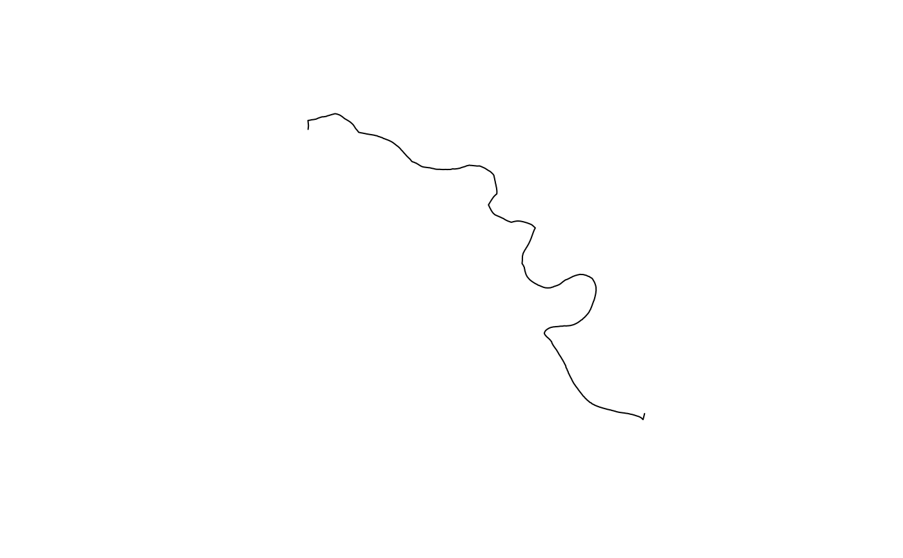

Channel axis (LINESTRING)
xt_axis.RdGet or set the reference axis used for downstream distance and ordering:
xt_arrange_downstream(), xt_distance_downstream(),
xt_gradient(), etc. Channels built with xt_generate_plan() store the
sampling axis automatically on the xchan object.
Usage
xt_axis(channel)
# S3 method for class 'xchan'
xt_axis(channel)
# Default S3 method
xt_axis(channel)
xt_axis(channel) <- value
# S3 method for class 'xchan'
xt_axis(channel) <- value
# Default S3 method
xt_axis(channel) <- valueArguments
- channel
An
xchanobject (cross-section geometry container).- value
A single LINESTRING as
sfcorsfg, same CRS as the plan geometry (else transformed with a warning).
Value
For xt_axis(), the stored sfc_LINESTRING or NULL. For
assignment, an updated xchan with attribute axis.
Details
The axis is reach-scale geometry (one polyline along the channel). It is
stored as attribute "axis" on the xchan object.
What “downstream” means: xt_distance_downstream(), xt_arrange_downstream(),
and related helpers treat increasing distance along the stored
LINESTRING, measured from its first vertex to its last (vertex
digitization order), as downstream. The package does not infer flow from
a DEM, network topology, or a separate flag—only from this polyline. Use
xt_reverse_flow() to reverse the axis (and flip transects) so the same
geographic line is traversed from the opposite end.
Assigning a new axis (xt_axis(channel) <- value): the stored polyline’s
first vertex is chainage zero and increasing distance along the line
is the package’s downstream direction for sorting and metrics—but local
left/right on each transect still come from planimetric encoding: the
first plan vertex is the left bank and the last is the right bank,
defined relative to the downstream tangent of the axis at the station where the
extended bank-to-bank chord meets the axis (same cross-product rule as xt_generate_plan()).
After the axis is set, each transect is re-oriented if needed (end-for-end) so vertex order
matches that convention when the axis pierces the segment from the “wrong”
side, matching profiles are mirrored so profile
distance still increases toward the right bank, and sections are re-sorted
with xt_arrange_downstream() by increasing projected chainage. A highly
curved, U-shaped, or self-overlapping axis can still yield counter-intuitive
chainages; the package does not validate global monotonicity against terrain.
Examples
# \donttest{
library(sf)
ch <- xt_generate_plan(Squamish_bankline, n = 20)
ax <- xt_axis(ch)
plot(ax)

# }